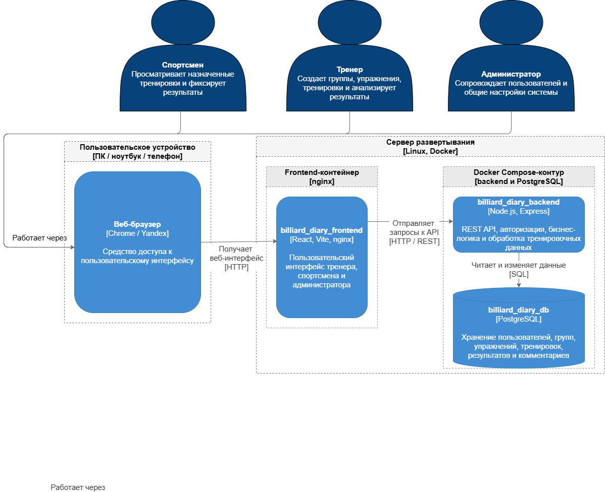

Документация разработчика
Назначение проекта
Billiard Diary — веб-приложение для ведения тренировочного процесса по бильярду. Система поддерживает роли администратора, тренера и спортсмена, библиотеку упражнений, группы, тренировки, посещаемость, комментарии к тренировкам и аналитические отчеты для тренера.
Состав проекта
billiard-diary/
billiard-diary-backend/ # Node.js backend API и init.sql
billiard-diary-frontend/ # React/Vite frontend
docker-compose.yml # локальный запуск БД, backend и frontend
README.md # краткая инструкция запуска
Backend имеет слоистую структуру:
routes— маршруты Express;controllers— обработка HTTP-запросов и ответов;services— бизнес-логика и проверки прав;repositories— SQL-запросы к PostgreSQL;schemas— AJV-схемы валидации входных данных;middlewares— авторизация, валидация и обработка ошибок;init.sql— создание структуры БД, индексов и демонстрационных данных.
Frontend имеет структуру:
pages— страницы приложения;layouts— layout по ролям пользователей;features— функциональные модули;shared— API-клиенты, типы, UI-компоненты и auth-хранилище;styles— глобальные стили интерфейса.
Технологии и версии
| Компонент | Версия / пакет |
|---|---|
| Backend runtime | Node.js 18-alpine |
| Backend framework | Express ^5.2.1 |
| База данных | PostgreSQL 16 |
| Frontend build | Node.js 22-alpine |
| Frontend web server | nginx 1.27-alpine |
| Frontend framework | React ^19.2.0 |
| Routing | react-router-dom ^7.13.0 |
| Графики | recharts ^3.8.1 |
| Сборка frontend | Vite ^7.3.1, TypeScript ~5.9.3 |
| Валидация backend | AJV ^8.17.1, ajv-formats ^3.0.1 |
| Авторизация | jsonwebtoken ^9.0.3, bcryptjs ^3.0.3 |
| PostgreSQL driver | pg ^8.18.0 |
| Env/CORS | dotenv ^17.2.4, cors ^2.8.6 |
Локальное развертывание
Для запуска требуется Docker Desktop. Node.js и PostgreSQL отдельно устанавливать не требуется, если проект запускается через Docker Compose.
Запуск из корня проекта:
После запуска доступны адреса:
- frontend:
http://localhost:3106; - backend API:
http://localhost:3000; - health-check backend:
http://localhost:3000/health; - PostgreSQL с локального компьютера:
localhost:5433.
Запуск по этапам:
Во втором терминале:
Остановка без удаления базы:
Полный сброс локальной базы:
init.sql выполняется автоматически только при первом создании volume PostgreSQL. Если структура или демо-данные в init.sql изменились, для повторного применения нужен сброс volume.
Переменные окружения и порты
| Переменная | Назначение |
|---|---|
PORT |
Порт backend внутри контейнера. По умолчанию 3000. |
DB_HOST |
В Docker Compose используется db; при локальном запуске backend без контейнера — localhost. |
DB_PORT |
Внутри Docker — 5432; с локального компьютера — 5433. |
DB_USER / DB_PASSWORD |
Локальные значения: postgres / postgres. |
DB_NAME |
Имя локальной базы: billiard_diary. |
JWT_SECRET |
Секрет подписи JWT. Для production должен быть заменен. |
JWT_EXPIRES_IN |
Время жизни JWT. По умолчанию 1h. |
CORS_ORIGIN |
Разрешенные адреса frontend. Для локального запуска: localhost:3106 и localhost:5173. |
VITE_API_URL |
Адрес backend API для frontend. Для локального запуска: http://localhost:3000. |
Демо-пользователи
При создании локальной базы добавляются демонстрационные учетные записи:
| Роль | Логин / пароль |
|---|---|
| Администратор | admin@example.com / 123 |
| Тренер | coach@example.com / 123 |
| Спортсмен | athlete@example.com / 123 |
| Спортсмен | athlete2@example.com / 123 |
| Спортсмен | athlete3@example.com / 123 |
Основной сценарий проверки выполняется под тренером coach@example.com / 123.
Основные backend-модули
/auth— авторизация и выдача JWT;/users— пользователи, тренеры и спортсмены;/groups— группы и принадлежность спортсменов к группам;/folders— папки библиотеки упражнений;/exercises— упражнения библиотеки;/trainings— групповые и персональные тренировки, элементы тренировок, посещаемость и комментарии;/analytics— read-only аналитика: фильтры, посещаемость, результативность и прогресс;/health— техническая проверка доступности backend.
Инструкция администратора
Для сопровождения локального стенда используются команды:
docker compose ps
docker compose logs -f backend
docker compose logs -f frontend
docker compose logs -f db
Если остались старые контейнеры с конфликтующими именами:
Если нужно полностью пересоздать базу:
Если занят порт frontend, в docker-compose.yml можно изменить внешний порт 3106:80, например на 3107:80.
Если занят порт backend, нужно изменить внешний порт 3000:3000 и пересобрать frontend с соответствующим VITE_API_URL.
Диаграмма развертывания
